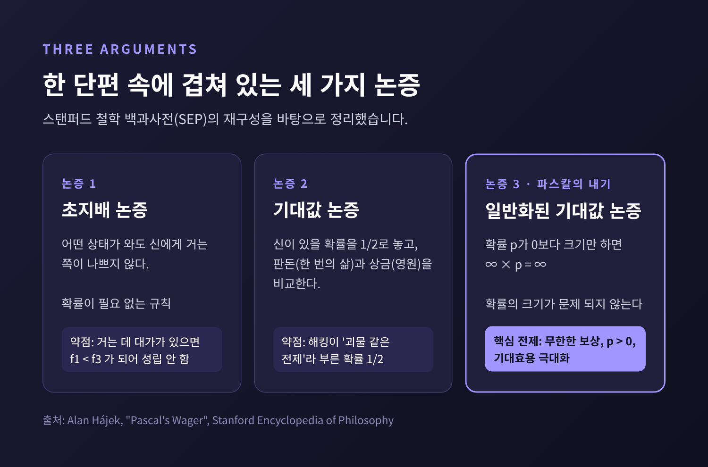
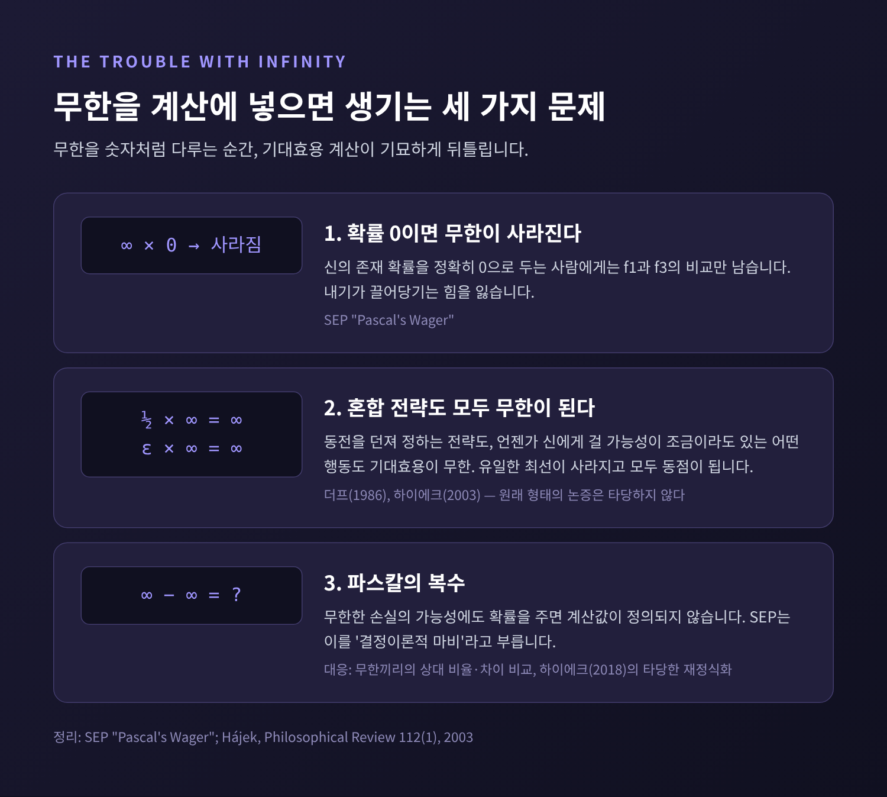

파스칼의 내기 논증 분석 — 작은 확률과 무한한 보상은 어떻게 판단해야 할까
이번 글에서는 '파스칼의 내기'를 결정이론의 언어로 다시 읽어 보겠습니다. 신앙을 권하거나 깎아내리려는 글이 아닙니다. 하나의 논증이 어떻게 짜여 있고, 어디에서 흔들리는지를 살펴보려는 글입니다.
먼저 요점부터 정리합니다.
- 파스칼의 내기는 "확률이 작아도 보상이 무한하면 기대값은 무한하다"는 구조의 논증입니다.
- 이 구조는 많은 신 반론, 믿음은 의지로 고를 수 없다는 반론, 무한 효용의 수학적 문제에 부딪힙니다.
- 같은 구조는 오늘날 '작은 확률 × 거대한 결과'를 다루는 위험 판단에서 여전히 살아 있습니다.
■ 『팡세』 속 짧은 단편 하나
블레즈 파스칼은 1623년에 태어나 1662년, 마흔을 채우지 못하고 세상을 떠났습니다. 그는 수학자였습니다. 1654년 여름에는 페르마와 편지를 주고받으며 '중단된 도박판의 판돈을 어떻게 나눌까'라는 문제를 풀었습니다. 이 서신은 근대 확률론의 출발점으로 꼽힙니다.
같은 해 11월 23일 밤, 그는 강렬한 종교 체험을 했습니다. 그 기록을 종이에 적어 옷에 꿰매 지니고 다녔고, 이 사실은 그가 죽은 뒤에야 알려졌습니다.
이후 파스칼은 그리스도교를 변호하는 책을 구상합니다. 그러나 책은 완성되지 못했습니다. 남은 메모들이 1670년, 사후에 『팡세(생각들)』라는 이름으로 묶여 나왔습니다.
내기 논증은 그 가운데 한 단편에 들어 있습니다. 판본마다 번호가 달라서, 라퓌마판으로는 418번, 브룅슈비크판으로는 233번입니다. '무한—무'라는 표제가 붙은 이 단편은 독자에게 말을 거는 대화체입니다.
출발점은 담담한 고백입니다. 신이 있는지 없는지는 "이성으로 결정할 수 없다." 증거로 결론이 나지 않는다면, 남는 질문은 하나입니다. '어느 쪽에 거는 것이 현명한가.'
■ 네 칸짜리 표로 다시 그려 보기
현대의 결정이론은 이런 문제를 표 하나로 정리합니다. 가로에는 세계의 상태를, 세로에는 내가 고를 수 있는 행동을 놓습니다.
상태는 두 가지입니다. 신이 존재하거나, 존재하지 않거나. 행동도 두 가지입니다. 신에게 걸거나, 신에 반해 걸거나.
스탠퍼드 철학 백과사전(SEP)의 정리를 따르면 네 칸은 이렇게 채워집니다. 신에게 걸었고 신이 있다면 보상은 무한(∞)입니다. 나머지 세 칸은 모두 유한한 값, 곧 f1, f2, f3입니다.
이 표에서 가장 먼저 떠오르는 논리는 '지배'입니다. 어떤 상태가 오든 한쪽 선택이 다른 쪽보다 나쁘지 않고, 적어도 한 상태에서는 확실히 낫다면 그 선택을 고르면 됩니다. 확률을 몰라도 되는 편리한 규칙입니다.
다만 여기에는 빈틈이 있습니다. 신에게 거는 일에는 대가가 따릅니다. 세속의 즐거움일 수도 있고, 시간과 습관일 수도 있습니다. 파스칼의 글에도 "너무 많이 거는 것일지도 모른다"는 반론의 목소리가 등장합니다. 그렇다면 신이 없는 세계에서 두 선택의 결과는 같지 않습니다. f1이 f3보다 작을 수 있다는 뜻이고, 그 순간 지배 논증은 성립하지 않습니다.
■ 기대효용과 무한이라는 지렛대
그래서 파스칼은 확률을 끌어들입니다. SEP는 이 단편 한 문단 안에 적어도 세 개의 논증이 겹쳐 있다고 봅니다.

두 번째 논증은 도박에 빗댄 것입니다. 신이 있을 확률을 반반으로 두고, 판돈은 유한한 한 번의 삶, 상금은 그보다 큰 삶 혹은 영원이라고 놓습니다. 철학자 이언 해킹은 이 '반반' 가정을 "괴물 같은 전제"라고 불렀습니다. 그런데도 그는 논증 자체는 타당하다고 인정했습니다.
이유는 세 번째 논증에 있습니다. 보상이 무한이라면 확률이 꼭 1/2일 필요가 없습니다. 0보다 크기만 하면 됩니다.
기대효용은 각 결과의 가치에 그 확률을 곱해 더한 값입니다. 신에게 거는 선택의 기대효용은 ∞ × p + f1 × (1 − p)입니다. p가 0.5든 0.000001이든, 무한에 양수를 곱하면 여전히 무한입니다. 반대편 선택은 유한한 값끼리의 합이니 끝내 유한합니다.
"무한 앞에서는 확률의 크기가 문제가 되지 않는다." 이것이 내기 논증이 쥔 지렛대입니다.
해킹은 이 논증을 결정이론에 대한 "최초의 잘 이해된 기여"라고 평가했습니다. SEP 역시 확률론과 결정이론이 역사상 거의 처음으로 실제 논증에 쓰인 사례로 봅니다. 확률론을 함께 세운 수학자가 그 도구를 가장 무거운 질문에 들이댄 셈입니다.
■ 반론 하나 — 표에 칸이 두 개뿐일까
가장 오래되고 널리 알려진 반론은 '많은 신 반론'입니다. '신이 존재하지 않는다'는 열 안에는 사실 수많은 다른 가능성이 숨어 있습니다.
18세기 철학자 디드로는 이렇게 짧게 꼬집었습니다. "이맘도 똑같이 이렇게 추론할 수 있다." 같은 계산법은 어느 종교에나 적용됩니다. 현대 철학자 카길은 한발 더 나아가, 실수 하나마다 대안이 되는 신을 하나씩 상정할 수도 있다고 보였습니다. 불신을 오히려 보상하는 신을 상상할 수도 있습니다.
표가 두 칸에서 수십, 수백 칸으로 늘어나면 문제가 생깁니다. 여러 선택지가 모두 무한한 보상을 약속하므로, 기대효용만으로는 우열을 가릴 수 없습니다.
물론 반박도 있습니다. 모든 가설이 같은 확률을 갖지는 않으니, 가장 그럴듯하다고 판단되는 쪽에 걸면 된다는 응답입니다. 하지만 그 판단을 내리려면 결국 증거와 논증으로 돌아가야 합니다. '이성으로는 결정할 수 없다'에서 출발한 논증이 다시 이성의 판단을 필요로 하게 되는 것입니다.
■ 반론 둘 — 믿음은 고를 수 있는 것인가
두 번째 반론은 더 근본적입니다. 내기는 '믿음을 선택하라'고 요구합니다. 그런데 사람은 마음먹는다고 무언가를 믿게 되지 않습니다.
철학에서는 의지로 믿음을 직접 정할 수 있다는 입장을 '믿음 주의주의'라고 부릅니다. 오늘날 대부분의 철학자는 이 입장에 회의적입니다. '지금 비가 온다'고 믿으려고 애써도, 창밖이 맑으면 그렇게 믿어지지 않습니다.
파스칼도 이 문제를 알고 있었습니다. 그의 답은 의외로 실천적입니다. 믿는 사람들처럼 행동하라는 것입니다. 성수를 받고, 미사를 드리게 하라. 그러면 믿음을 가로막던 정념이 줄어들고, 믿음이 뒤따를 수 있다고 그는 말합니다.
이 답변은 흥미로운 지점을 짚습니다. 믿음을 직접 고를 수는 없어도, 믿음이 자랄 환경은 고를 수 있다는 생각입니다. 현대 해석 가운데에는 내기를 아예 '믿음'이 아니라 '헌신과 실천'에 대한 선택으로 읽자는 제안도 있습니다.
비판도 만만치 않습니다. 이익을 계산해 얻은 믿음이 과연 진짜 믿음이냐는 물음입니다. 윌리엄 제임스는 이런 계산으로 얻은 믿음에는 내면의 실재가 없다고 보았습니다. 볼테르는 궁극의 문제를 도박판처럼 다루는 태도 자체를 못마땅해했습니다. 증거에 맞춰 믿어야 한다는 '증거주의'와 정면으로 부딪힌다는 지적도 있습니다. 이에 대해서는 증거주의가 규율하는 것은 믿음이지 행동이 아니라는 응답이 나와 있습니다.
■ 반론 셋 — 무한을 계산에 넣으면 생기는 일
세 번째 반론은 수학에서 나옵니다. 무한을 숫자처럼 다루는 순간, 계산이 기묘하게 뒤틀립니다.
첫째, 확률 0의 문제입니다. 확고한 무신론자는 신의 존재 확률을 정확히 0으로 둘 수 있습니다. 그러면 무한에 0이 곱해져 사라지고, 남는 것은 f1과 f3의 비교뿐입니다. SEP의 표현대로라면 내기는 이런 사람에게 "끌어당기는 힘이 없습니다."
둘째, 혼합 전략 반론입니다. 철학자 앨런 하이에크는 2003년 논문에서 이 점을 날카롭게 정리했습니다. 동전을 던져 앞면이 나오면 신에게 걸겠다고 해 봅시다. 신에게 걸 확률이 1/2이니, 이 전략의 기대효용도 무한입니다. 심지어 오늘 햄버거를 먹기로 하는 일조차, 언젠가 신에게 걸게 될 확률이 조금이라도 있다면 기대효용이 무한이 됩니다.

모든 선택이 똑같이 무한이라면, 기대효용 극대화는 아무것도 골라 주지 못합니다. 하이에크는 그래서 원래 형태의 논증이 타당하지 않다고 봅니다. 해킹이 타당하다고 본 것과 대조되는 대목입니다.
셋째, '파스칼의 복수'라 불리는 문제입니다. 무한한 보상의 가능성에 확률을 준다면, 무한한 손실의 가능성에도 확률을 줄 수 있습니다. 그러면 계산은 ∞ − ∞가 되어 값이 정의되지 않습니다. SEP는 이를 '결정이론적 마비'라고 부릅니다.
학계는 이를 손 놓고 있지 않았습니다. 무한한 결과끼리의 상대적 비율이나 차이를 비교하는 방식 등 여러 재정식화가 제안되었습니다. 하이에크 자신도 2018년 연구에서, 신에게 걸 확률이 낮을수록 기대효용도 낮아지게 만든 타당한 변형을 내놓았습니다. 논증은 무너졌다기보다, 더 정교한 수선을 요구받고 있는 상태입니다.
■ 무한이 아니어도 — '파스칼의 강도'
내기의 핵심 문제가 '무한'에만 있다면, 무한을 계산에서 빼면 될 일입니다. 그런데 무한이 없어도 비슷한 곤란이 생깁니다.
2007년 엘리저 유드코프스키가 '파스칼의 강도'라는 이름을 붙였고, 2009년 닉 보스트롬이 학술지 『애널리시스』에 짧은 대화편으로 다듬었습니다.
줄거리는 이렇습니다. 강도가 파스칼에게 지갑을 주면 내일 두 배로 갚겠다고 합니다. 파스칼은 믿기 어렵다며 거절합니다. 강도는 보상을 키웁니다. 그 확률이 아무리 작아도, 그보다 더 큰 보상을 부르면 된다는 계산입니다. 결국 1,000조 일의 행복한 삶을 약속하고, 파스칼은 지갑을 넘깁니다.
여기서 약속된 보상은 무한이 아닙니다. 거대할 뿐입니다. 그런데도 보상이 커지는 속도가 확률이 줄어드는 속도보다 빠르면, 기대효용은 '지갑을 주라'고 답합니다. 이런 원칙을 따르는 사람은 말솜씨 좋은 누군가에게 끝없이 착취당할 수 있습니다.
해법을 두고 견해는 갈립니다. 효용에 상한을 두자는 입장, 비범한 주장일수록 확률을 훨씬 낮게 매기자는 입장, 아주 작은 확률은 아예 무시하자는 입장이 있습니다. 반대로 헤이든 윌킨슨은 2022년 논문에서, 작은 확률의 거대한 보상을 존중하는 이른바 '광신'을 거부하면 그보다 더 큰 비일관성을 떠안게 된다고 주장했습니다. 그의 표현을 빌리면 "치료가 병보다 나쁘다"는 것입니다. 이 논쟁은 지금도 끝나지 않았습니다.
■ 오늘의 위험 판단에 남기는 질문들
이 이야기는 먼 철학 교실의 문제가 아닙니다. '작은 확률 × 거대한 결과'라는 구조는 우리 주변에 흔합니다.
예전에는 신앙의 문제를 두고 이 구조가 다뤄졌습니다. 지금은 핵전쟁, 생명공학 연구, 환경 파괴, 인공지능 같은 주제에서 같은 구조가 등장합니다. SEP는 핵 재앙을 음의 무한으로 보거나, 자연환경의 가치를 무한하지는 않다고 보는 논의들을 이 계보에 넣습니다. 2022년 『필로소피 나우』에는 기후변화 대응을 '파스칼의 기후 내기'로 정리한 글도 실렸습니다. 원인 논쟁을 잠시 접어 두더라도, 대응하지 않았을 때의 손실이 대응 비용보다 훨씬 크다면 대응에 거는 것이 합리적이라는 논리입니다. 보스트롬은 결함 있는 결정 이론을 탑재한 인공지능이 강도에게 털리는 파스칼처럼 행동할 위험도 경고했습니다.
내기 논증과 그 반론에서 몇 가지 점검 질문을 끌어낼 수 있습니다.
- 표의 칸을 빠짐없이 그렸는가. 많은 신 반론의 교훈입니다. 대안이 둘뿐이라는 가정은 자주 틀립니다. 기후 내기 역시 '대응한다/안 한다'보다 훨씬 많은 정책 선택지를 갖고 있습니다.
- 확률은 어디서 왔는가. 반반이라는 가정은 '모른다'의 다른 이름이 아닙니다. 해킹이 괴물 같다고 부른 이유입니다.
- 결과를 무한이나 초거대로 둘 근거가 있는가. 무한을 하나 넣으면 다른 모든 고려가 사라집니다. 그만큼 엄격한 근거가 필요합니다.
- 이 구조가 나를 설득하는 도구로 쓰이고 있지는 않은가. 강도의 교훈입니다. 거대한 결과를 내세우며 작은 확률을 무시하라고 요구하는 말에는 한 번 더 멈춰 설 필요가 있습니다.
그렇다고 작은 확률을 늘 무시해도 된다는 결론은 아닙니다. 드물지만 치명적인 위험에 대비하는 일은 보험과 안전 설계의 기본입니다. 문제는 그 판단을 계산 한 줄에 전부 맡기는 데 있습니다.
정리하면 이렇습니다.
파스칼의 내기는 결정이론의 초기 형태로서 놀라울 만큼 정교합니다. 동시에 그 정교함 때문에 표의 칸, 확률의 출처, 무한의 취급이라는 약점이 또렷이 드러납니다. 수백 년 동안 반론이 쌓였지만, 같은 구조의 질문은 모양만 바꿔 계속 돌아옵니다.
계산은 판단을 돕는 도구이지, 판단을 대신하는 장치가 아닙니다.
이 논증이 여전히 읽을 가치가 있느냐고 물으신다면, 그렇다고 답하겠습니다. 정답을 주어서가 아니라, 우리가 무엇을 어떻게 계산하고 있는지 되묻게 만들기 때문입니다.
#파스칼의내기 #팡세 #결정이론 #기대효용 #파스칼의강도 #철학교양 #위험판단
참고 자료
- Alan Hájek, "Pascal's Wager", Stanford Encyclopedia of Philosophy (2022 개정) — https://plato.stanford.edu/entries/pascal-wager/
- "Blaise Pascal (1623–1662)", Internet Encyclopedia of Philosophy — https://iep.utm.edu/pascal-b/
- Liz Jackson, "Pascal's Wager", 1000-Word Philosophy (2021) — https://1000wordphilosophy.com/2021/01/04/pascals-wager/
- Alan Hájek, "Waging War on Pascal's Wager", The Philosophical Review 112(1), 2003 — https://researchportalplus.anu.edu.au/en/publications/waging-war-on-pascals-wager/
- Nick Bostrom, "Pascal's Mugging", Analysis 69(3), 2009 — https://stafforini.com/works/bostrom-2009-pascal-mugging/
- "Pascal's mugging", Wikipedia — https://en.wikipedia.org/wiki/Pascal%27s_mugging
- Martin Peterson, "The St. Petersburg Paradox", Stanford Encyclopedia of Philosophy — https://plato.stanford.edu/entries/paradox-stpetersburg/
- Hayden Wilkinson, "In Defense of Fanaticism", Ethics 132(2), 2022 — https://globalprioritiesinstitute.org/wp-content/uploads/Hayden-Wilkinson-In-defence-of-fanaticism-Jul-2022-1.pdf
- APS News, "Pascal's Letters to Fermat on the 'Problem of Points'" (2009) — https://www.aps.org/apsnews/2009/07/pascal-letters-fermat-points
- Keith Tidman, "Pascal's Climate Wager", Philosophy Now 148 (2022) — https://philosophynow.org/issues/148/Pascals_Climate_Wager